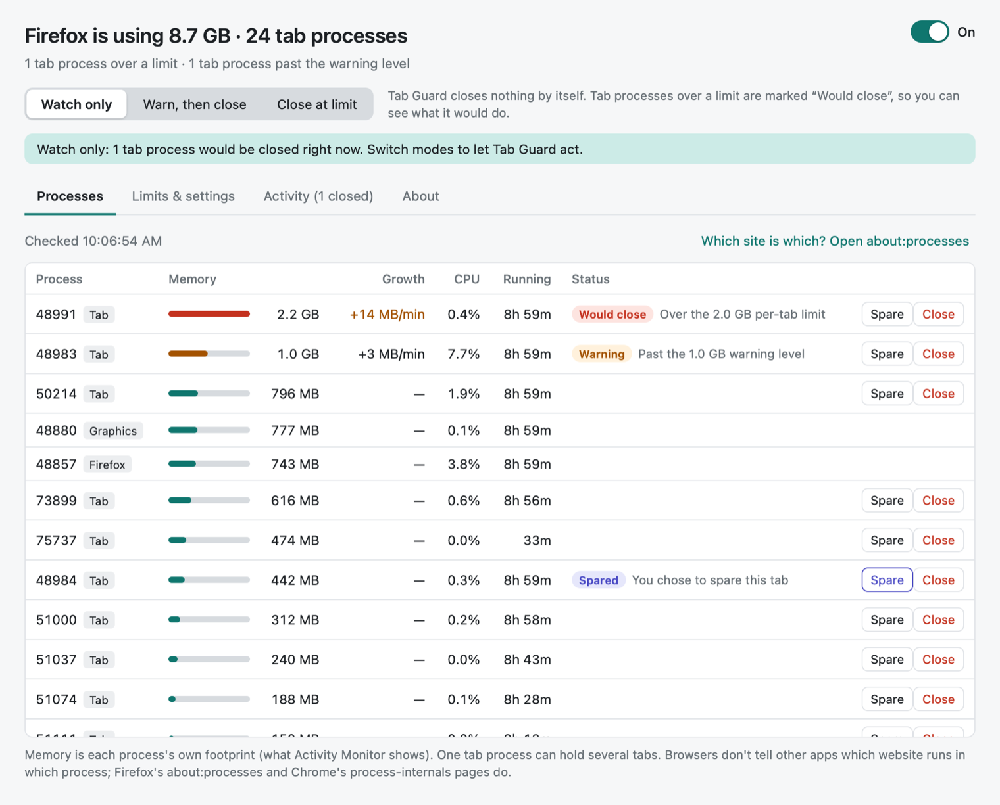
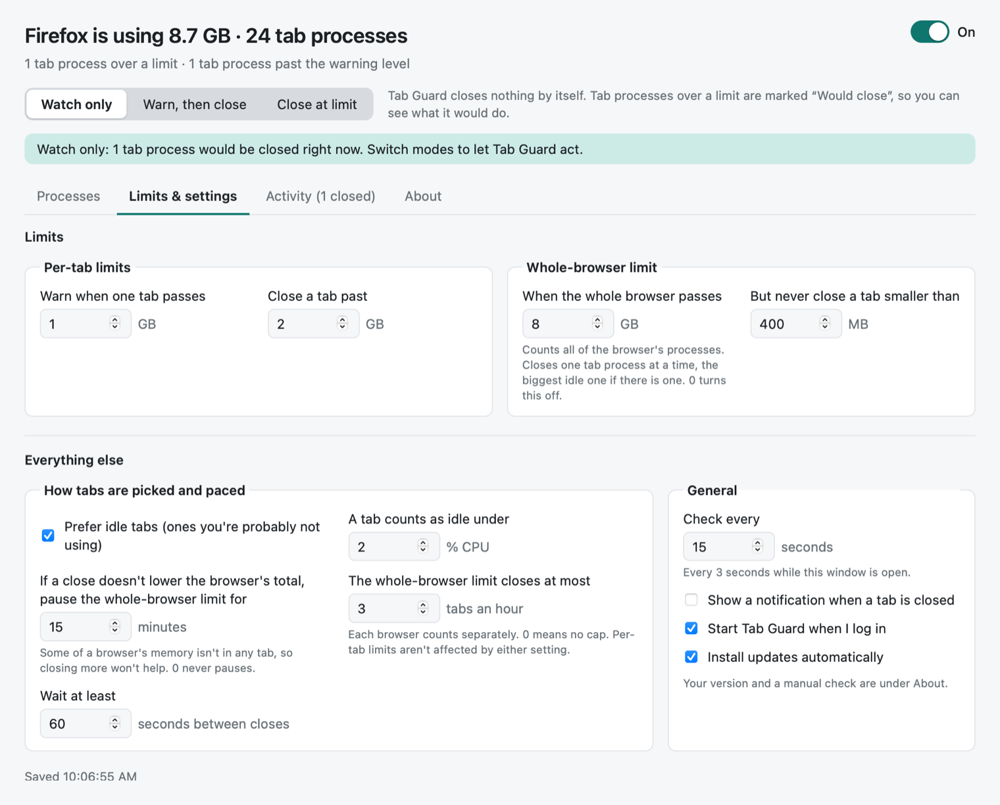

Tab Guard
Closes browser tabs when they use too much memory. Free, open source, and it doesn't track you.
It starts in Watch only and closes nothing until you choose. A closed tab loses anything unsaved in it.
What it does
One leaking tab can grow to several gigabytes and push a Mac into swap, and finding it by hand is a chore. macOS can't cap an app's memory, so Tab Guard watches instead. It sits in the menu bar, checks each browser's tab processes every 15 seconds, flags the ones past your limits, and, if you let it, closes them one at a time. The browser shows a closed tab as crashed, with a button that reloads it.

Works with Firefox and browsers built on it (Zen, LibreWolf, Waterfox, Floorp and more) and with Chrome and its relatives (Edge, Brave, Arc, Vivaldi, Opera). Not Safari: its page processes are shared with Mail and other apps, so there's no telling which are its tabs.
How it works
Watch first
It starts in Watch only: it shows what it would close and why, and closes nothing until you pick a mode.
Your limits
A per-tab limit (2 GB by default) and a whole-browser limit (8 GB) that closes the biggest tab, preferring an idle one, and never one under 400 MB. Each browser you run gets its own limits.
Knows when to stop
One close at a time, at least a minute apart. The whole-browser limit closes at most 3 tabs an hour, and pauses for 15 minutes if a close doesn't lower the browser's total.
Stays out of the way
About 19 MB of memory with its window closed, measured on an Apple silicon Mac. Pause it from the menu bar for an hour, until morning, or until you turn it back on.

Before you turn on closing
Closing a tab is abrupt: it just shows as crashed, and anything unsaved in it is gone. Keep Tab Guard in Watch only, or pause it from the menu bar, while you're on a call, presenting, or doing work you can't lose. One process can hold several tabs from the same site, so closing it crashes all of them. It judges by memory alone, and can't tell which website a process is. The README lists the rest.
Nothing leaves your Mac
Tab Guard doesn't track anything. No analytics, no telemetry, no account, no identifier. It never sees which website runs in which tab. It's a tool for the sake of a tool: it does one job, on your Mac, and sends nothing anywhere.
The one thing it fetches is its own update, from GitHub, every 6 hours. You can turn that off in Limits & settings, and then it makes no network requests at all. The privacy notes say the same thing in more words.
Install
Download the .dmg, open it, and drag Tab Guard to Applications. It updates itself after
that. The source is on GitHub under the MIT
license.